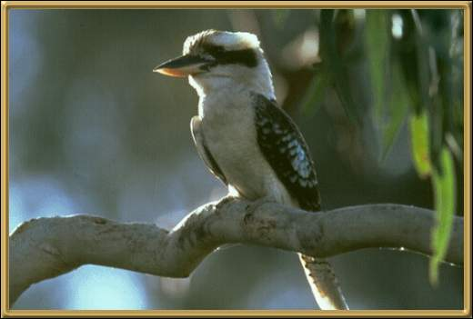

This is a laughing kookaburra. They are widely spread through the eastern areas of Australia and some parts of W.A. They're the largest member of the kingfisher family, and eat other baby birds!,frogs, snakes and worms. Their laugh is delightful to hear, except to another kookaburra looking for a nest site, because their laugh is actually a territorial call. They are approx. 43cm (17 inches).
Photographer: G Threlfo